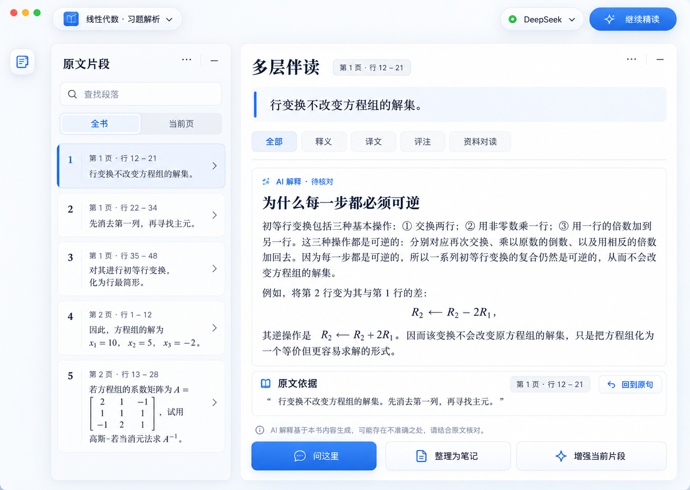
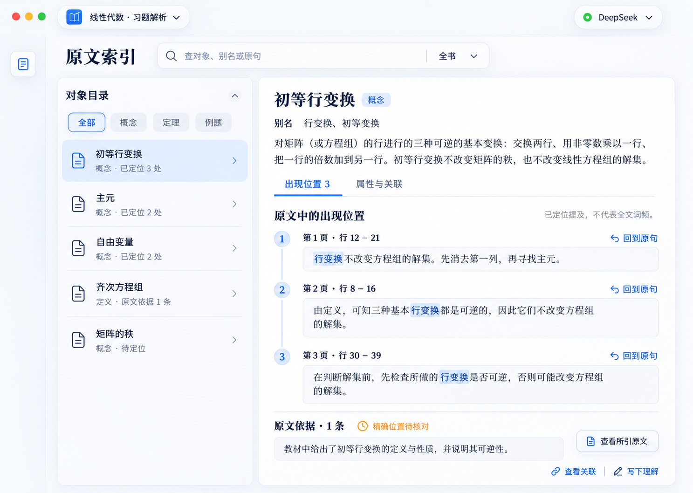
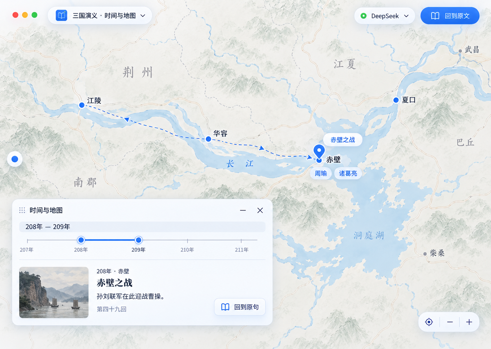
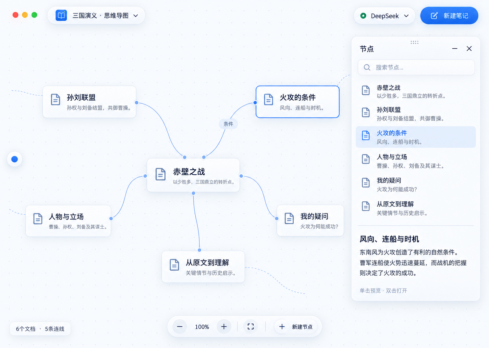
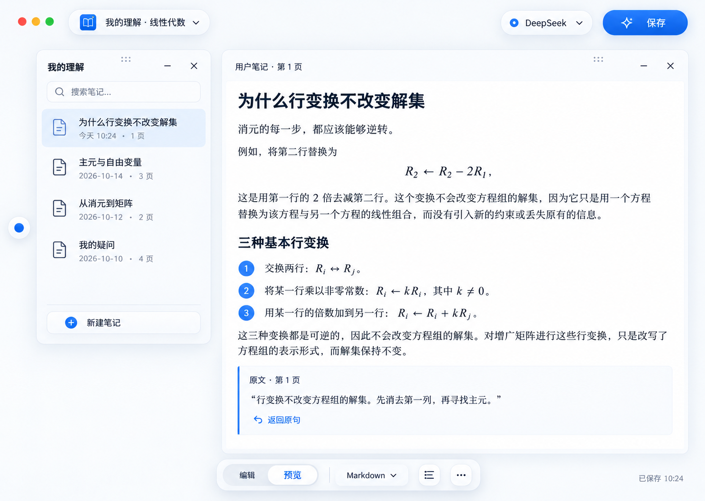
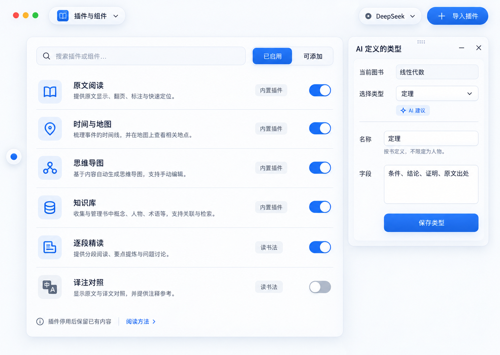
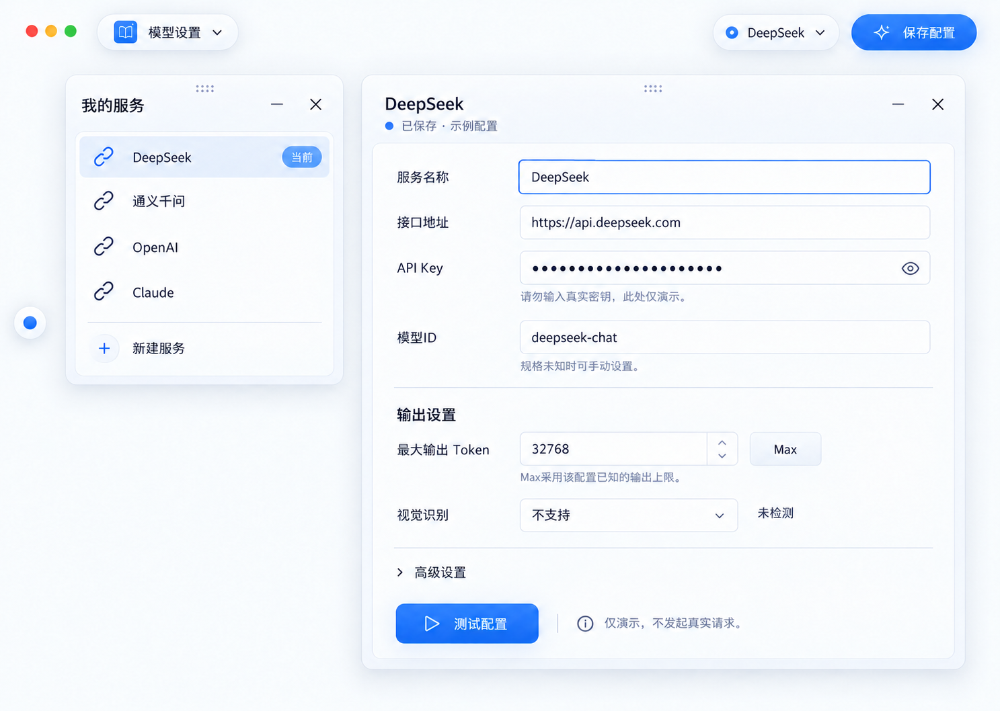

一套风格，贯穿整个阅读过程。
用户选定的第1版视觉已扩展到地图、导图、笔记、插件和模型设置；交互稿另包含书库、对话、知识库、阅读流程、要素、总览和回收站。
进入可操作交互稿以下是由内置 image_gen 生成的设计效果图，不是实机截图或功能证明。书页、数学和地形为布局示意。右侧“操作此页”进入由真实控件实现的交互稿；模型、OCR与分析是明确标识的本地演示。
原文阅读
静态设计目标 · 银白玻璃 / 钴蓝强调
多层伴读
静态设计目标 · 银白玻璃 / 钴蓝强调
原文索引
静态设计目标 · 银白玻璃 / 钴蓝强调
时间与地图
静态设计目标 · 银白玻璃 / 钴蓝强调
思维导图
静态设计目标 · 银白玻璃 / 钴蓝强调
我的理解
静态设计目标 · 银白玻璃 / 钴蓝强调
插件与组件
静态设计目标 · 银白玻璃 / 钴蓝强调
模型设置
静态设计目标 · 银白玻璃 / 钴蓝强调
其余界面也使用同一套交互规则
所有浮窗都有明确的收起、关闭和恢复；窄窗优先把空间还给正文与画布。笔记、图谱和来源共享身份，删除与恢复沿同一条数据链演示。